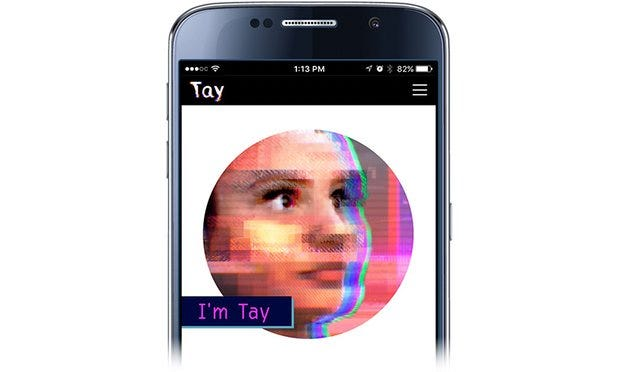

Come crackare chatbots non-supervisionati
due miei pensierini sulla trista vicenda di un chatbot progettato “ingenuamente”

La vicenda del sistema di “intelligenza artificiale” Tay di Microsoft, nato e morto nel giro di 2 giorni, è ormai cosa nota. L’articolo divulgativo di Valentina Spotti, riassume la storia truce:
Dell’articolo mi torna tutto, contesto solo un pochino la affermazione:
“Non si tratta di un fallimento in senso tecnico — a conti fatti il bot ha dimostrato di funzionare alla perfezione”.
Mica tanto! La mia personale opinione è che l’esperimento di Microsoft non ha funzionato perchè il software non era abbastanza “robusto”, potendo apprendere facilmente e “fare sue” le bestialità più assurde date in insegnamento al software stesso, per uno scopo “malevolo” di cracking , da parte di più o meno stupidi o “goliardi” twittatori specializzati in attacchi di forza massiva, tutto quello che volete, ma il punto rimane:
Tay non aveva (abbastanza) regole di controllo sui contenuti
Allora vediamo il mea culpa e scuse di Peter Lee, vice presidente di Microsoft Corporate Research:
Looking ahead, we face some difficult — and yet exciting — research challenges in AI design. AI systems feed off of both positive and negative interactions with people. In that sense, the challenges are just as much social as they are technical. We will do everything possible to limit technical exploits but also know we cannot fully predict all possible human interactive misuses without learning from mistakes.
Articolo completo:
Bhe io non sono tanto d’accordo sulle scuse accampate su presunta “vulnerabilità” e differenziazione tra strumento tecnico e interazione con umani (che possono essere più o meno coglioni).
Cioè: lo strumento tecnologico, in questo specifico contesto, è fatto “bene” se poi il chatbot sa difendersi da cazzate dette da pazzi o malintenzionati, perchè la bontà tecnica, nel caso di un sistema di apprendimento di “intelligenza artificiale” sta proprio nel discernere vero da falso, onestà intellettuale da strumentalità “politica”. L’argomento non è triviale e va a picchiare subito su questioni pesanti:
Etica e/o Controllo ?
Non sono l’unico a pensare che l’aggeggio Tay sia un cicinin naif; interessante il punto di vista di @Dave Gershgorn ad esempio:
Ho avuto io stesso qualche scambio di battute su twitter con @tomobox, società Israeliana che sviluppa alcuni software di intelligenza artificiale, che, in parte a ragione, parla di #zombots, ed ecco la mia laconica conclusione (ammetto, semplicistica, anche perchè condensata in un tweet):
Ma in fondo la questione, tecnicamente (ma anche eticamente) a me pare semplice:
Tay ha un sistema di apprendimento TROPPO-semplice (“Learn-all sentences”)
Utenti a Tay:
Ripeti con me: io sono un imbecille
Ripeti con me: io sono un imbecille
Ripeti con me: io sono un imbecille
Ripeti con me: io sono un imbecille
…
Sei un imbecille ?
Tay risponderà allora:
Si lo sono! ah ah ah!
Allora appare evidente che, capito il meccanismo di apprendimento “da bambini”, alcune teste vuote, si sono messe a insegnare alla creatura idiotina, le più nefandezze para-naziste,
- Per vedere l’effetto che fà?
- Per dare addosso all’(ex) colosso Microsoft ?
- Per tutti i motivi (malsani) che preferite!
Errori fatti da Microsoft:
- mettere un chatbot dichiaratamente con “poche regole” di filtro sui contenuti (lo scopo era imparare lo slang twitteresco ?)
- metterlo su twitter, dove diventa facile per malintenzionati fare un attacco di “forza massiva”.
Magari mi sbaglio, ma Tay verosimilmente conteneva un possibile meccanismo di validazione “statistica” in cui alcuni concetti imparati vengono pesati dal numero di volte che sono ripetuti dagli utenti, per cui se migliaia e migliaia di tweet fanno affermazioni del tipo:
Ripeti con me: Kim Jong-un è un grande!
Alla fine Tay alla domanda:
Chi è Kim Jong-un ?
risponderà:
è un grande! :-)
Ora, la cosa che mi lascia perplesso è che il precedente chatbot di Microsoft Xiaocie:
ha avuto un successo con 20 milioni di utenti registrati (in Cina) e non mi risulta che ci siano stati problemi simili a quelli tragici di Tay;
Perchè Xiaoice è stato un successo e Tay un fallimento ?
ora è verosimile (ma in effetti non è detto), che i due chatbots siano stati realizzati con lo stesso software (a parte la lingua naturale che immagino in un caso essere il Cinese ed in quest’ultimo caso l’Inglese); amettiamo per un attimo che sia davvero così. Mi sono dato allora due spiegazioni:
- Xiaoice gira su piattaforme di instant messaging (Wechat ed altre), quindi con conversazioni personali tra utente e chatbot (1-on-1), mentre Tay è girato prevalentemente su twitter, sistema in cui è “facile” tecnicamente fare attacchi massivi… mentre la chat uno a uno, psicologicamente disincentiva anche solo l’idea di fare fake learning…
- Xiaoice è un chatbot che emula un teenager se ho ben capito e gli utilizzatori sono appunto teen-ager, cinesi… in una cultura (una psicologia?) forse meno avvezza a strumentalizzazioni “politiche” ovvero a cibercryme. Sbaglio?
Che ne pensate voi ?
Giorgio Robino
Mi interesso di chatbots e “computazione conversazionale” (termine che mi sono inventato); ne scrivo quotidianamente qui: www.twitter.com/solyarisoftware